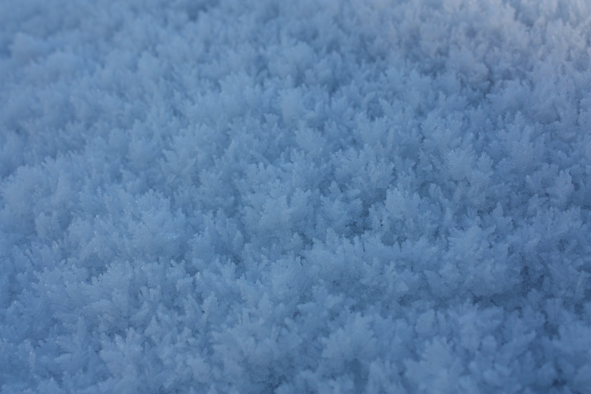

Page 1 of 1
Photos for December 2010

Posted:
Thu Dec 02, 2010 1:44 amby bredman
A few shots of the winter wonderland around Retford Notts today. All on a compact camera so apologies for the quality. The snow is 20" deep, and deeper in parts.
One from the Mrs, hence the flash on the window - bless her. The back yard.

A busy street

On the 'high street'.

Just after i cleared a route to the back gate another 'blizzard' starts.

A barge sat on the Cheserfield Canal during a late stroll earlier.

Re: Photos for December 2010
Posted:
Thu Dec 02, 2010 2:16 amby DavidH
bredman wrote:Just after i cleared a route to the back gate another 'blizzard' starts.
Yeah, I had a sudden attack of civic duty yesterday and cleaned the portion of path in front of my apartment. It was covered up again in no time. I reckon it's safer to walk on the snow anyway than the black ice underneath.
Nice pics!
Re: Photos for December 2010
Posted:
Thu Dec 02, 2010 9:30 amby IrishWhiskeyChaser
Nice pics al right ... we're not too bad over here in the west ... it's too cold to snow

Currently -10 outside which is the coldest I've ever witnesed. I saw on the news scotland was expecting temps as low as -25 and possibly lower with -27 being the lowest recorded so they are not far off a record up there.
Re: Photos for December 2010
Posted:
Tue Dec 07, 2010 1:46 amby scotty
great photos.
thanks
Re: Photos for December 2010
Posted:
Wed Dec 15, 2010 4:54 amby bredman
Anyone have any december photos of the Motherland ( Ireland ), to add to this thread? Or anywhere else for that matter, as long as it's december.
Re: Photos for December 2010
Posted:
Wed Dec 15, 2010 10:13 amby JohnM
Here's a few from Templeogue...

- december1.jpg (348.07 KiB) Viewed 2169 times

- december2.jpg (243.46 KiB) Viewed 2169 times
Re: Photos for December 2010
Posted:
Wed Dec 15, 2010 10:39 amby IrishWhiskeyChaser
I like the way snow sticks to the tree in the first shot John looks a good effect.
We did not have anywhere near the snow the rest of the country seemed to have but it may have had something to do with the really cold temps ... from -7 to -10 for most of one week warming up to -4 ... these temps were all taken between 8&9am in the morning but it never went to 0 or high for a whole week which might explain our lack of snow.
So Bredman you were looking for pictures of Mother Irelann
Well here you go ... mother ireland


Re: Photos for December 2010
Posted:
Wed Dec 15, 2010 10:41 amby IrishWhiskeyChaser
A tree in my Garden, I thought the contrast between the really Blue sky and the white tree was nice and the sky was really that blue when I took the picture. A really lovely fresh day.

And this is a White Thorn bush ironically ...

The Neighbourhood

Re: Photos for December 2010
Posted:
Wed Dec 15, 2010 12:13 pmby JohnM
Excellent, especially the tree one in the garden.
This was just the ice on my car. It was ever so cold.
- 
- ice.jpg (121.83 KiB) Viewed 2165 times
Re: Photos for December 2010
Posted:
Wed Dec 15, 2010 1:15 pmby IrishWhiskeyChaser
Those Ice formations are quite amazing and cool. You must of had fun getting that off. My windscreen suffered the same fate one moring but not as impressive eventhough the wipers looked a bit mad
Re: Photos for December 2010
Posted:
Wed Dec 15, 2010 1:29 pmby IainB
IrishWhiskeyChaser wrote:I like the way snow sticks to the tree in the first shot John looks a good effect.
We did not have anywhere near the snow the rest of the country seemed to have but it may have had something to do with the really cold temps ... from -7 to -10 for most of one week warming up to -4 ... these temps were all taken between 8&9am in the morning but it never went to 0 or high for a whole week which might explain our lack of snow.
So Bredman you were looking for pictures of Mother Irelann
Well here you go ... mother ireland
There's actually no such thing as being too cold to snow. Met Office were talking about it over the cold snap. Essentially the reason you didn't get any was that the bands of precipitation (i.e. clouds) missed you. With the lack of cloud cover the temperature may have fallen further than would otherwise have been the case but that still means the lack of snow and the cold have the same root cause rather than one causing the other.
Or something.
I drove past gorey one day and it was minus 10. And there was plenty of snow.
Re: Photos for December 2010
Posted:
Wed Dec 15, 2010 2:55 pmby bredman
Nice one guys. The same conditions here in the East of England.
John, i think that's a hoar frost, it occurs when objects become colder than the surrounding air, as opposed to a 'normal' frost.
Re: Photos for December 2010
Posted:
Wed Dec 15, 2010 3:33 pmby JohnM
It was a hoar of a frost alright, Pete.
Re: Photos for December 2010
Posted:
Thu Jan 13, 2011 6:57 pmby GSC
You folks got hit earlier than we did in the eastern USA. Our big storm, 30 inches or more, came Dec 26. I blame all those who wished for a white Christmas. Got another 4 inches Jan 2, and 6 more on Jan 11-12. More than we usually get, and a lot earlier too.
Are big snowfalls normal for your side of the Atlantic? East coast storms here move eastward across the country, and we can watch them approach and figure out when and how much snowfall we could get.
Re: Photos for December 2010
Posted:
Thu Jan 13, 2011 8:53 pmby IrishWhiskeyChaser
In Ireland we very rarely see snow so even an inch is a big deal never mind 3 & 4 inches. Also sub zero temperatures are not very common and -1 to -3 would be a hard winter so -12 to -17 is

Because of the infrequency of such temps we are not equiped to deal with them ... i.e. very few people would have snow chains for their cars.
Grid lock on roads, water pipes freezing it was an experience that a lot of people had not had before.
Re: Photos for December 2010
Posted:
Tue Jan 25, 2011 2:53 pmby scotty
Loving the photos.
Thanks all.